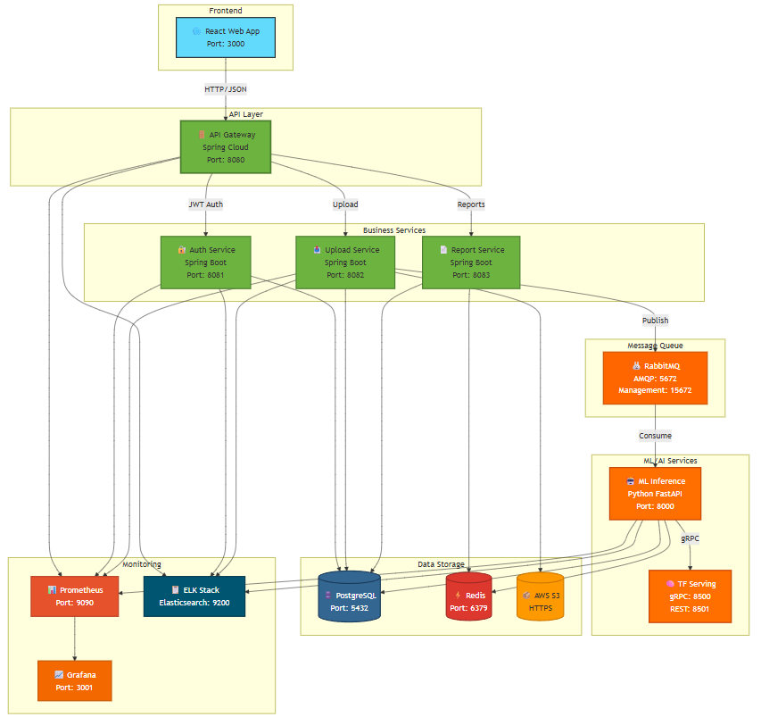

3.1.7. Компонентная схема сервисов
Описание
Компонентная схема показывает, как микросервисы взаимодействуют друг с другом, какие протоколы используются для коммуникации, и какие данные передаются между компонентами.

System Architecture (Интерактивная версия)
Ключевые компоненты
1. Frontend Layer
Web Application (React 18)
- Назначение: Пользовательский интерфейс
- Технологии:
- React 18 (UI framework)
- Redux Toolkit (state management)
- Axios (HTTP client)
- Material-UI (component library)
- Связи:
- → API Gateway (HTTP/HTTPS)
- ← WebSocket для real-time уведомлений
2. API Layer
API Gateway (Spring Cloud Gateway)
- Назначение: Единая точка входа, маршрутизация, аутентификация
- Функции:
- Routing (маршрутизация запросов)
- Authentication (JWT validation)
- Rate Limiting (ограничение запросов)
- Load Balancing (балансировка нагрузки)
- Связи:
- ← Web Application (HTTP)
- → Auth Service (gRPC)
- → Data Upload Service (HTTP)
- → Report Service (HTTP)
- → Prometheus (метрики)
3. Business Logic Layer
Auth Service (Spring Boot + Keycloak)
- Назначение: Управление пользователями и авторизация
- Функции:
- Регистрация пользователей
- Генерация JWT токенов
- Управление ролями (RBAC)
- Связи:
- ← API Gateway (gRPC)
- → PostgreSQL (read/write users)
- → Email Service (SMTP)
Data Upload Service (Spring Boot)
- Назначение: Приём и валидация медицинских данных
- Функции:
- Валидация файлов (формат, размер)
- Сохранение в S3
- Отправка в очередь обработки
- Связи:
- ← API Gateway (HTTP)
- → AWS S3 (REST API)
- → RabbitMQ (AMQP)
- → PostgreSQL (metadata)
ML Inference Service (Python + FastAPI)
- Назначение: Обработка данных моделями ИИ
- Функции:
- Препроцессинг изображений (OpenCV)
- ResNet-50 inference
- BERT tokenization & inference
- Постпроцессинг результатов
- Связи:
- ← RabbitMQ (consumer)
- → TensorFlow Serving (gRPC)
- → Redis (write results)
- → PostgreSQL (write results)
Report Service (Spring Boot)
- Назначение: Генерация отчётов
- Функции:
- Генерация PDF (PDFKit)
- Генерация HTML
- Интеграция с Clinic MIS
- Связи:
- ← API Gateway (HTTP)
- → PostgreSQL (read results)
- → Redis (read cached results)
- → Clinic MIS (REST API)
4. ML/AI Layer
TensorFlow Serving (gRPC)
- Назначение: Высокопроизводительный inference
- Модели:
- ResNet-50 (image classification)
- BERT (text analysis)
- Связи:
- ← ML Inference Service (gRPC)
- → GPU Cluster (CUDA)
- → Model Registry (model loading)
Model Registry (MLflow)
- Назначение: Версионирование и хранение моделей
- Функции:
- Хранение весов моделей
- A/B тестирование версий
- Rollback к предыдущим версиям
- Связи:
- ← TensorFlow Serving (model pull)
- → AWS S3 (model storage)
5. Data Layer
PostgreSQL 14 (Primary Database)
- Назначение: Хранение метаданных и результатов
- Схемы:
users: Пользователи и ролиmedical_data: Метаданные загруженных файловresults: Результаты диагностикиreports: История отчётов
- Связи:
- ← Auth Service (read/write)
- ← Data Upload Service (write)
- ← ML Inference Service (write)
- ← Report Service (read)
- Репликация:
- Master-Slave (1 master, 2 replicas)
- Streaming replication
Redis 7.0 (Cache)
- Назначение: Кэширование результатов ИИ
- Данные:
- Результаты inference (TTL = 1 hour)
- Сессии пользователей
- Rate limiting counters
- Связи:
- ← ML Inference Service (write)
- ← Report Service (read)
- ← API Gateway (rate limiting)
- Репликация:
- Redis Sentinel (HA)
AWS S3 (Object Storage)
- Назначение: Хранение медицинских изображений
- Buckets:
medical-images-raw: Оригинальные изображенияmedical-images-processed: Обработанные изображенияml-models: Веса моделейreports-archive: Архив PDF-отчётов
- Связи:
- ← Data Upload Service (write)
- ← Model Registry (read/write)
6. Message Broker Layer
RabbitMQ 3.9 (Message Broker)
- Назначение: Асинхронная обработка задач
- Очереди:
medical_data: Загруженные данные для обработкиml_inference: Задачи для ML Servicereport_generation: Задачи для Report Servicedlq(Dead Letter Queue): Неудачные задачи
- Связи:
- ← Data Upload Service (producer)
- → ML Inference Service (consumer)
- → Report Service (consumer)
- Конфигурация:
- Durable queues
- Message TTL = 24 hours
- Max retries = 3
7. Monitoring & Logging Layer
ELK Stack
Filebeat
- Назначение: Сбор логов
- Связи:
- ← Все сервисы (log files)
- → Logstash (forwarding)
Logstash
- Назначение: Обработка и фильтрация логов
- Связи:
- ← Filebeat (logs)
- → Elasticsearch (indexing)
Elasticsearch
- Назначение: Индексация и поиск по логам
- Связи:
- ← Logstash (logs)
- → Kibana (queries)
Kibana
- Назначение: Визуализация логов и дашборды
- Связи:
- ← Elasticsearch (queries)
- → DevOps (Web UI)
Prometheus + Grafana
Prometheus
- Назначение: Сбор метрик
- Метрики:
- API Gateway: Request rate, latency
- ML Service: Inference time, GPU utilization
- PostgreSQL: Connection pool, query time
- RabbitMQ: Queue size, message rate
- Связи:
- ← Все сервисы (scraping)
- → Grafana (queries)
- → AlertManager (alerts)
Grafana
- Назначение: Визуализация метрик
- Дашборды:
- System overview
- ML performance
- API performance
- Infrastructure health
- Связи:
- ← Prometheus (queries)
- → DevOps (Web UI)
8. External Integrations
Email Service (SMTP)
- Назначение: Отправка уведомлений
- Провайдер: SendGrid / AWS SES
- Связи:
- ← Auth Service (registration emails)
- ← Report Service (report ready notifications)
Clinic MIS (Medical Information System)
- Назначение: Интеграция с клиникой
- Протокол: REST API (JSON)
- Связи:
- ← Report Service (POST /reports)
Протоколы коммуникации
| Источник | Назначение | Протокол | Формат данных |
|---|---|---|---|
| Web App | API Gateway | HTTP/HTTPS | JSON |
| API Gateway | Auth Service | gRPC | Protobuf |
| API Gateway | Other Services | HTTP | JSON |
| Data Upload Service | RabbitMQ | AMQP | JSON |
| ML Inference Service | TensorFlow Serving | gRPC | Protobuf |
| Services | PostgreSQL | TCP | SQL |
| Services | Redis | TCP | Redis Protocol |
| Services | S3 | HTTPS | REST API |
| Services | Prometheus | HTTP | Metrics Format |
| Services | ELK | TCP | JSON |
Паттерны взаимодействия
1. Синхронное взаимодействие
- Используется: Web App ↔ API Gateway ↔ Report Service
- Преимущества: Простота, немедленный ответ
- Недостатки: Блокирующий вызов
2. Асинхронное взаимодействие
- Используется: Data Upload → RabbitMQ → ML Inference
- Преимущества: Отказоустойчивость, масштабируемость
- Недостатки: Сложность отслеживания
3. Event-Driven
- Используется: ML результаты → Event → Report Generation
- Преимущества: Слабая связанность
- Недостатки: Сложность debugging
4. Request-Response
- Используется: API Gateway ↔ Business Services
- Преимущества: Прямолинейность
- Недостатки: Tight coupling
Масштабирование
Горизонтальное
- API Gateway: 3+ replicas (Kubernetes HPA)
- ML Inference Service: Auto-scaling based on GPU utilization
- Data Upload Service: 2+ replicas
Вертикальное
- TensorFlow Serving: GPU instances (NVIDIA T4/A100)
- PostgreSQL: High-memory instances
- Redis: High-memory instances
Кэширование
- Redis: Результаты ИИ (TTL = 1h)
- CDN: Статические ресурсы (CloudFlare)
Источники
- «Building Microservices» Sam Newman
- «Designing Data-Intensive Applications» Martin Kleppmann
- Spring Cloud Gateway Documentation
- TensorFlow Serving Guide